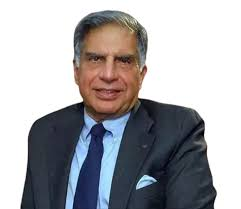

What are media queries
At MEIL, we are inspired to innovate, to invent, to impact lives through Innovative Engineering. Megha Engineering & Infrastructures Limited (MEIL), headquartered in Hyderabad, has a turnover of more than US 1$ billion. It is an emerging player in the global infrastructure scenario. The company has had a marked presence in the manufacturing industry for almost 25 years. MEIL is a pioneer of the Public–Private–Partnership (PPP) model of development in India, where projects are developed in partnership between the central and state governments, private sector partners, financing agencies and communities. We have engineered significant projects in the areas of irrigation, water management, power, hydrocarbons, transportation, buildings, and industrial infrastructure and we are committed to work towards our goal of Engineering for a Better Life. There is nothing that we can't achieve, when an army of more than 3000 soldiers constantly works towards a single aim of lighting up the lives of millions. The MEIL group has diversified into various sectors and the company is currently executing projects in more than eighteen states across India. The phenomenal growth of the company in the last decade can be attributed to factors like extraordinary project execution strategies & visionary leadership.
Reliance Industries Limited is an Indian multinational conglomerate headquartered in Mumbai. Its businesses include energy, petrochemicals, natural gas, retail, entertainment, telecommunications, mass media, and textiles. Reliance is the largest public company in India by market capitalisation[4] and revenue,[5] and the 100th largest company worldwide.[6] It is India's largest private tax payer[7] and largest exporter, accounting for 7% of India's total merchandise exports.The company has relatively little free cash flow and high corporate debt.

Ratan Naval Tata (born 28 December 1937) is an Indian industrialist, philanthropist and former chairman of Tata Sons. He was a chairman of the Tata Group from 1990 to 2012, and interim chairman from October 2016 through February 2017. He continues to head its charitable trusts.[2][3] In 2008, he received the Padma Vibhushan, the second highest civilian honour in India, after receiving the Padma Bhushan, the third highest civilian honour in 2000.
Ratan Naval Tata (born 28 December 1937) is an Indian industrialist, philanthropist and former chairman of Tata Sons. He was a chairman of the Tata Group from 1990 to 2012, and interim chairman from October 2016 through February 2017. He continues to head its charitable trusts.[2][3] In 2008, he received the Padma Vibhushan, the second highest civilian honour in India, after receiving the Padma Bhushan, the third highest civilian honour in 2000.